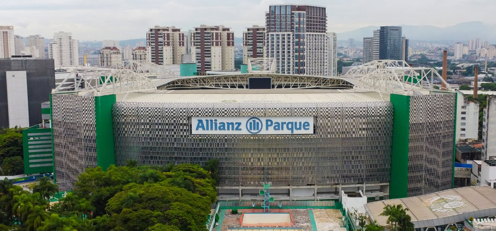

O Gigante Moderno: A História e Estrutura do Allianz Parque
Moderno e imponente, o Allianz Parque é a principal arena multiuso da América Latina. Localizada no
coração de São Paulo, maior metrópole do continente, no mesmo solo que por mais de 100 anos abrigou o
Parque Antarctica e, posteriormente, o Estádio Palestra Italia, a casa do Palmeiras foi reinaugurada em
2014 como um marco do centenário do clube e hoje é um dos grandes orgulhos da torcida alviverde.
O caminho para a transformação do velho Palestra foi aberto em 2008, na Assembleia de Associados do
clube que aprovou a cessão do uso de superfície do terreno para exploração de terceiros, e teve um ponto
de partida dois anos depois, quando Palmeiras e WTorre, empresa responsável pela reforma, assinaram
contrato e deram início às obras, que custaram cerca de R$ 630 milhões e foi totalmente custeada pela
parceira. O acordo de 30 anos entre as partes prevê ainda que o Maior Campeão do Brasil fique com toda
operação e renda em dias de jogos e receba um percentual crescente em patrocínios, serviços, aluguel de
camarotes e na realização de quaisquer outros eventos no local.
O Allianz Parque atende a todas as normas da Fifa e dispõem de 43.713 cadeiras cobertas, sendo 25.395 no
anel inferior, 3.430 nos dois andares intermediários (são 178 camarotes privativos de 12 a 21 lugares
cada) e 14.888 no anel superior os assentos são pintados de três tons de verde que se intercalam,
originando um desenho geométrico inspirado nas folhas das palmeiras. No topo da estrutura estão os dois
telões com área superior a 103m², e em dias de grandes espetáculos a capacidade sobe para 55 mil pessoas
com a ocupação da área do gramado. Existe também a possibilidade de utilização do anfiteatro, com
capacidade de 12 mil pessoas (incluindo um centro de convenções com estrutura modular para até 1.500
visitantes), além de diversos espaços de diferentes tamanhos para eventos corporativos.
Na área com acesso ao campo, há dois vestiários para as equipes (um com 355 m² e o outro com 270 m²), um
vestiário exclusivo para árbitros, sete salas de apoio, lounge de acesso VIP e central de mídia para
dezenas de jornalistas. O complexo conta ainda com isolamento acústico, cabines e tribuna de imprensa
com posicionamento privilegiado, uma cozinha central de 1.500 m² e dez cozinhas de apoio com serviço de
buffet, um restaurante, lanchonetes, quiosques de atendimento ao público, lojas, banheiros, ambulatórios
médicos e estacionamento coberto para até 2.000 carros, com vagas exclusivas para motocicletas e
bicicletário.

Palco dos Recordes: 11 anos, 14 títulos e contando...
O Allianz Parque celebra quarta-feira (19/11/2025) 11 anos desde sua inauguração, considerado para
muitos um
dos principais símbolos de modernização do futebol brasileiro e do entretenimento nacional.
Desde de que foi inaugurado, em 19 de novembro de 2014, a arena se consolidou como um polo esportivo,
cultural e corporativo, recebendo números expressivos de público e programação. As informações foram
divulgadas pela assessoria de imprensa do Allianz Parque.
Ao longo desse período, o estádio recebeu mais de 17 milhões de pessoas e ultrapassou a marca de 2 mil
eventos realizados. Dentro de campo, o Palmeiras disputou 340 partidas na arena, anotou 646 gols e
acumulou
224 vitórias, 67 empates e apenas 49 derrotas.
O desempenho transformou o estádio em um dos pilares da força recente do clube, reforçando o peso do
mando
de campo para a equipe paulista que, principalmente com o técnico Abel Ferreira, foi protagonista do
futebol
brasileiro nos últimos anos.
Mas o Allianz Parque ultrapassa as fronteiras do esporte. A arena já sediou 255 shows nacionais e
internacionais e se consolidou como um dos palcos mais versáteis da América Latina. O recorde de público
foi
registrado em 26 de novembro de 2023, quando 49.596 pessoas assistiram a um dos espetáculos da cantora
norte-americana Taylor Swift.
Com a soma de jogos, apresentações musicais e eventos corporativos, a arena mantém média superior a 1,5
milhão de visitantes por ano. A gestão do espaço é realizada pela WTorre, responsável também pela
construção
do complexo.
O contrato com o Palmeiras, válido até 2044, estabeleceu um modelo de negócios inédito no futebol
brasileiro. Atualmente, a arena conta com 15 patrocinadores entre naming rights, sector rights e
parcerias
exclusivas de alimentação e bebidas, segundo as informações da assessoria de imprensa do estádio.
O Allianz Parque também se tornou um centro de serviços. Hoje, abriga três restaurantes (de culinária
japonesa, italiana e churrasco) além de barbearia, estúdios de tatuagem em dias de jogos e áreas
corporativas que comportam até 2 mil pessoas. Os camarotes também se destacam, visto que são 160
unidades
com taxa de ocupação de 92%, e os valores no centro do campo podem chegar a R$ 1 milhão por temporada.
Em 2024, apenas a operação da arena arrecadou mais de R$ 240 milhões, número que não inclui a bilheteria
das
partidas do Palmeiras, integralmente destinada ao clube. Os resultados reforçam o Allianz Parque como um
dos
principais cases de sustentabilidade financeira do esporte brasileiro.
A transformação estrutural também se refletiu no desempenho esportivo do Palmeiras. Antes da nova arena,
o
clube possuía apenas uma conquista da Copa Libertadores. Desde 2014, foram dois títulos continentais
(2020 e
2021), quatro Campeonatos Brasileiros, duas Copas do Brasil, quatro Campeonatos Paulistas, a Recopa
Sul-Americana e a Supercopa do Brasil, totalizando 14 títulos desde a inauguração do Allianz Parque.

A Imersão na Casa do Campeão: Visitas, Avanti e Curiosidades do Allianz Parque
O Allianz Parque transcende a função de um mero estádio de futebol, posicionando se como um complexo de
entretenimento que busca envolver o torcedor e o público geral em experiências de imersão, história e
modernidade.
Para o público que deseja conhecer os bastidores da arena, o Allianz Parque Tour Experience oferece uma
jornada completa pelos pontos mais emblemáticos, guiada por anfitriões que compartilham a história do
clube e da construção. O roteiro da visita inclui a entrada no vestiário onde os jogadores se preparam,
o acesso à Sala de Imprensa permitindo aos visitantes tirar fotos nas cadeiras dos craques e do
técnico e, o momento mais emocionante, a passagem pelo túnel dos jogadores até a lateral do gramado,
sentindo a perspectiva da arena. A experiência se completa com a visita à Sala de Troféus do Palmeiras,
exibindo as glórias e conquistas do "Maior Campeão do Brasil", e a contemplação dos Arcos do Antigo
Palestra Itália, um ponto de conexão com a memória do estádio original.
O programa de sócio-torcedor Avanti é o principal elo entre o Palmeiras e sua torcida, oferecendo uma
série de benefícios que se estendem à arena. O principal é a prioridade e o desconto na compra de
ingressos para os jogos, sendo que o percentual varia conforme o plano (Verde, Prata, Ouro, Platina e
Diamante). Além disso, sócios Avanti desfrutam de descontos no valor do Allianz Parque Tour Experience e
podem participar de eventos especiais promovidos pelo programa Palmeiras Experiências, como o "Dia de
Craque", que permite a torcedores jogarem no gramado do Allianz Parque, ou o "Academia Tour", que leva
sócios para conhecerem o Centro de Treinamento.
A história da arena é rica em fatos que a diferenciam no cenário do futebol e entretenimento brasileiro.
Uma curiosidade marcante é que a inauguração em 19 de novembro de 2014 não foi vitoriosa para o
Palmeiras, que perdeu para o Sport por 2 a 0, com o primeiro gol da história da nova arena sendo marcado
pelo adversário, Ananias. A vocação multiuso do local foi rapidamente testada: o primeiro grande evento
internacional sediado foi o show do ex-Beatle Paul McCartney, apenas seis dias após o jogo inaugural.
Arquitetonicamente, a arena é famosa por seu design acústico: suas arquibancadas íngremes e cobertura
quase fechada potencializam o som, criando um "efeito panela de pressão" que a torna um dos ambientes
mais intimidadores do futebol sul-americano. Essa modernidade e flexibilidade renderam prêmios, tendo o
Allianz Parque sido eleito, em uma ocasião, como o "Estádio do Ano" pelo site espanhol Elgoldigital.com.
Por fim, a conexão com o sucesso do clube é inegável, com o atacante Dudu se consagrando como o
principal goleador da arena, reforçando a ligação entre o estádio e os recentes ciclos vitoriosos do
Palmeiras.